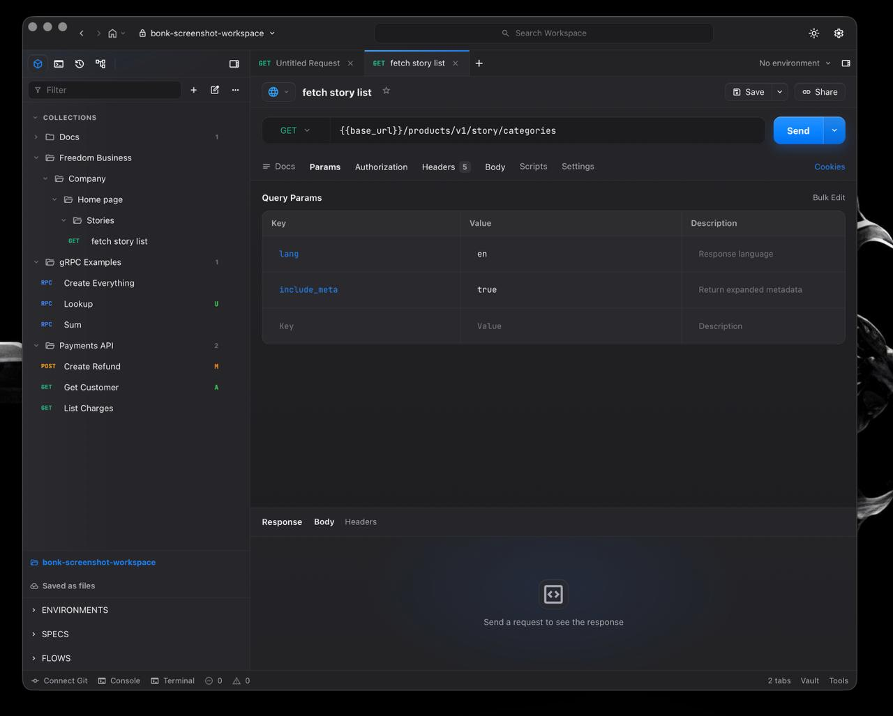

Requests that stay readable
Params, headers, auth, raw JSON, form data, binary bodies, redirects, timings, and formatted responses.
Rust-powered desktop API client
HTTP, gRPC, workspaces, history, and Git diffs in one native desktop app. The request engine is written in Rust, not Electron, so bonk stays fast, small, and ~10× lighter than typical Electron API clients.
Why it exists
bonk keeps the useful parts of an API client and makes the workspace feel like code: folders, request files, diffs, commits, and pull requests.
Params, headers, auth, raw JSON, form data, binary bodies, redirects, timings, and formatted responses.
Connect to a gRPC endpoint, browse reflected services, generate example messages, and invoke methods.
Every saved request is a *.bonk.json file. Nested folders mirror the sidebar exactly.
Status badges, real diffs, staged changes, commit history, branches, pull, and push through system Git.
Built in Rust
HTTP, gRPC, workspace IO, history, and Git operations run through a Rust core. The UI renders in the OS-native WebView through Tauri, so bonk ships without bundled Chromium, without Node in production, and without a 400 MB runtime.
| bonkRust · Tauri | Postman / InsomniaElectron | |
|---|---|---|
| RAM at idle | ~37 MB | ~400–700 MB |
| Download size | ~7 MB | ~200 MB – 1 GB |
| Idle CPU | ~0% | noticeable |
| Engine | Rust + native WebView | bundled Chromium + Node |
| Account / cloud | none — local-first | account, cloud sync |
| Collections | plain files, git-diffable | proprietary DB / cloud |
bonk numbers measured on a release build; Electron figures are typical ranges for those apps.
Screenshots

Install and update
Tagged releases publish desktop bundles and an updater manifest. Homebrew is wired through the tap workflow; Chocolatey needs the package to be published under the same app name before the public launch.
Open source
The app is MIT licensed, the core request logic lives in Rust, and the workspace format is intentionally boring JSON so teams can review API changes like code.